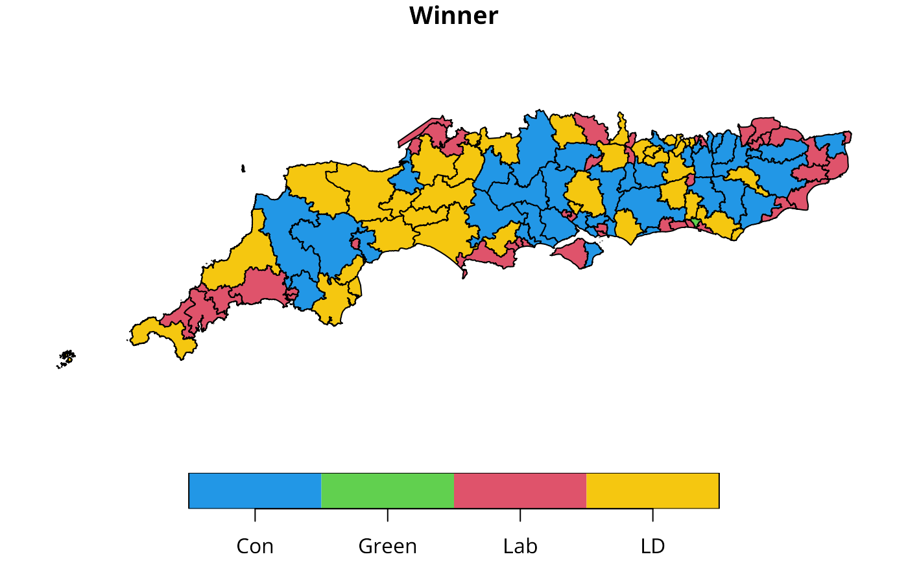
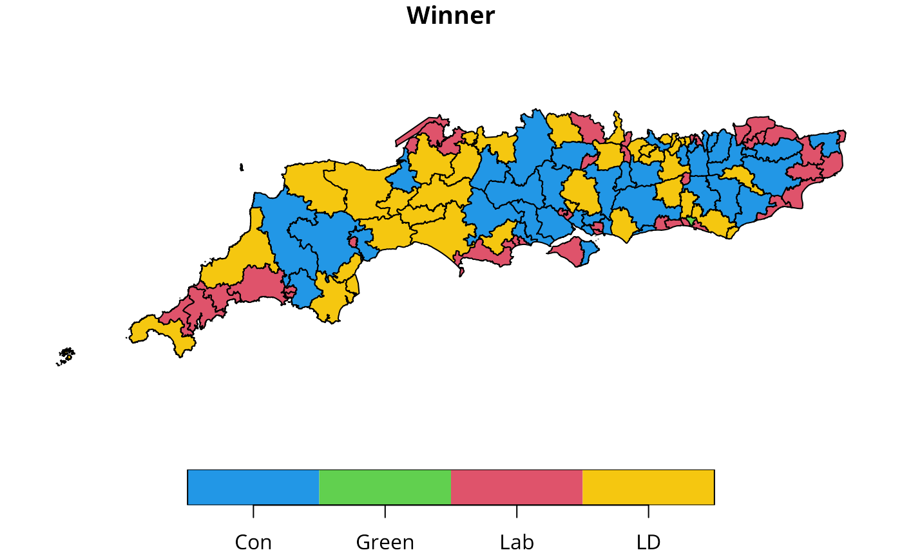

BB, BW and Jtot join count statistic for k-coloured factors
joincount.multi.RdA function for tallying join counts between same-colour and different colour spatial objects, where neighbour relations are defined by a weights list. Given the global counts in each colour, expected counts and variances are calculated under non-free sampling, and a z-value reported. Since multiple tests are reported, no p-values are given, allowing the user to adjust the significance level applied. Jtot is the count of all different-colour joins.
Arguments
- fx
a factor of the same length as the neighbours and weights objects in listw
- listw
a
listwobject created for example bynb2listw- zero.policy
default
attr(listw, "zero.policy")as set whenlistwwas created, if attribute not set, use global option value; if TRUE assign zero to the lagged value of zones without neighbours, if FALSE assign NA- adjust.n
default TRUE, if FALSE the number of observations is not adjusted for no-neighbour observations, if TRUE, the number of observations is adjusted consistently (up to and including spdep 0.3-28 the adjustment was inconsistent - thanks to Tomoki NAKAYA for a careful bug report)
- spChk
should the data vector names be checked against the spatial objects for identity integrity, TRUE, or FALSE, default NULL to use
get.spChkOption()- x
object to be printed
- ...
arguments to be passed through for printing
Value
A matrix with class jcmulti with row and column names for observed and expected counts, variance, and z-value.
References
Cliff, A. D., Ord, J. K. 1981 Spatial processes, Pion, p. 20; Upton, G., Fingleton, B. 1985 Spatial data analysis by example: point pattern and qualitative data, Wiley, pp. 158–170.
Author
Roger Bivand Roger.Bivand@nhh.no
Note
The derivation of the test (Cliff and Ord, 1981, p. 18) assumes that the weights matrix is symmetric. For inherently non-symmetric matrices, such as k-nearest neighbour matrices, listw2U() can be used to make the matrix symmetric. In non-symmetric weights matrix cases, the variance of the test statistic may be negative.
Examples
columbus <- st_read(system.file("shapes/columbus.gpkg", package="spData")[1], quiet=TRUE)
HICRIME <- cut(columbus$CRIME, breaks=c(0,35,80), labels=c("low","high"))
(nb <- poly2nb(columbus))
#> Neighbour list object:
#> Number of regions: 49
#> Number of nonzero links: 236
#> Percentage nonzero weights: 9.829238
#> Average number of links: 4.816327
lw <- nb2listw(nb, style="B")
joincount.multi(HICRIME, lw)
#> Joincount Expected Variance z-value
#> low:low 35.000 30.102 19.247 1.1164
#> high:high 54.000 27.694 18.219 6.1630
#> high:low 29.000 60.204 26.630 -6.0468
#> Jtot 29.000 60.204 26.630 -6.0468
col_geoms <- st_geometry(columbus)
col_geoms[21] <- st_buffer(col_geoms[21], dist=-0.05)
st_geometry(columbus) <- col_geoms
(nb <- poly2nb(columbus))
#> Warning: some observations have no neighbours;
#> if this seems unexpected, try increasing the snap argument.
#> Warning: neighbour object has 3 sub-graphs;
#> if this sub-graph count seems unexpected, try increasing the snap argument.
#> Neighbour list object:
#> Number of regions: 49
#> Number of nonzero links: 230
#> Percentage nonzero weights: 9.579342
#> Average number of links: 4.693878
#> 1 region with no links:
#> 21
#> 3 disjoint connected subgraphs
lw <- nb2listw(nb, style="B", zero.policy=TRUE)
joincount.multi(HICRIME, lw)
#> Joincount Expected Variance z-value
#> low:low 35.000 30.585 19.350 1.0036
#> high:high 52.000 28.138 18.342 5.5716
#> high:low 28.000 61.170 25.882 -6.5200
#> Jtot 28.000 61.170 33.190 -5.7577
# \dontrun{
data(oldcol)
HICRIME <- cut(COL.OLD$CRIME, breaks=c(0,35,80), labels=c("low","high"))
names(HICRIME) <- rownames(COL.OLD)
joincount.multi(HICRIME, nb2listw(COL.nb, style="B"))
#> Joincount Expected Variance z-value
#> low:low 34.000 29.592 18.895 1.0141
#> high:high 54.000 27.224 17.888 6.3307
#> high:low 28.000 59.184 26.233 -6.0884
#> Jtot 28.000 59.184 26.233 -6.0884
data(hopkins, package="spData")
image(1:32, 1:32, hopkins[5:36,36:5], breaks=c(-0.5, 3.5, 20),
col=c("white", "black"))
box()
 hopkins.rook.nb <- cell2nb(32, 32, type="rook")
unlist(spweights.constants(nb2listw(hopkins.rook.nb, style="B")))
#> n n1 n2 n3 nn S0 S1 S2
#> 1024 1023 1022 1021 1048576 3968 7936 61984
hopkins.queen.nb <- cell2nb(32, 32, type="queen")
hopkins.bishop.nb <- diffnb(hopkins.rook.nb, hopkins.queen.nb, verbose=FALSE)
#> Warning: neighbour object has 2 sub-graphs
hopkins4 <- hopkins[5:36,36:5]
hopkins4[which(hopkins4 > 3, arr.ind=TRUE)] <- 4
hopkins4.f <- factor(hopkins4)
table(hopkins4.f)
#> hopkins4.f
#> 0 1 2 3 4
#> 657 215 98 30 24
joincount.multi(hopkins4.f, nb2listw(hopkins.rook.nb, style="B"))
#> Joincount Expected Variance z-value
#> 0:0 864.00000 816.27273 116.05233 4.4304
#> 1:1 94.00000 87.14015 55.25216 0.9229
#> 2:2 18.00000 18.00379 14.81562 -0.0010
#> 3:3 2.00000 1.64773 1.55539 0.2825
#> 4:4 5.00000 1.04545 0.99845 3.9576
#> 1:0 503.00000 535.05682 227.76750 -2.1241
#> 2:0 213.00000 243.88636 97.21769 -3.1325
#> 2:1 99.00000 79.81061 59.01930 2.4978
#> 3:0 61.00000 74.65909 28.58592 -2.5547
#> 3:1 28.00000 24.43182 18.99976 0.8186
#> 3:2 15.00000 11.13636 9.82411 1.2327
#> 4:0 40.00000 59.72727 22.78583 -4.1327
#> 4:1 23.00000 19.54545 15.26564 0.8842
#> 4:2 14.00000 8.90909 7.90051 1.8112
#> 4:3 5.00000 2.72727 2.58616 1.4133
#> Jtot 1001.00000 1059.89015 273.78610 -3.5591
cat("replicates Upton & Fingleton table 3.4 (p. 166)\n")
#> replicates Upton & Fingleton table 3.4 (p. 166)
joincount.multi(hopkins4.f, nb2listw(hopkins.bishop.nb, style="B"))
#> Joincount Expected Variance z-value
#> 0:0 823.00000 790.76420 144.44877 2.6821
#> 1:1 101.00000 84.41702 55.98143 2.2164
#> 2:2 19.00000 17.44117 14.61542 0.4077
#> 3:3 3.00000 1.59624 1.51444 1.1407
#> 4:4 3.00000 1.01278 0.97111 2.0166
#> 1:0 497.00000 518.33629 234.93545 -1.3920
#> 2:0 216.00000 236.26491 104.42142 -1.9831
#> 2:1 81.00000 77.31652 58.70829 0.4807
#> 3:0 58.00000 72.32599 31.49151 -2.5529
#> 3:1 21.00000 23.66832 18.85316 -0.6145
#> 3:2 17.00000 10.78835 9.62487 2.0022
#> 4:0 48.00000 57.86080 25.15973 -1.9659
#> 4:1 21.00000 18.93466 15.14473 0.5307
#> 4:2 10.00000 8.63068 7.73708 0.4923
#> 4:3 4.00000 2.64205 2.51686 0.8560
#> Jtot 973.00000 1026.76858 284.51030 -3.1877
cat("replicates Upton & Fingleton table 3.6 (p. 168)\n")
#> replicates Upton & Fingleton table 3.6 (p. 168)
joincount.multi(hopkins4.f, nb2listw(hopkins.queen.nb, style="B"))
#> Joincount Expected Variance z-value
#> 0:0 1687.0000 1607.0369 303.8034 4.5877
#> 1:1 195.0000 171.5572 114.2057 2.1936
#> 2:2 37.0000 35.4450 29.6821 0.2854
#> 3:3 5.0000 3.2440 3.0687 1.0024
#> 4:4 8.0000 2.0582 1.9674 4.2361
#> 1:0 1000.0000 1053.3931 480.6959 -2.4353
#> 2:0 429.0000 480.1513 215.0360 -3.4882
#> 2:1 180.0000 157.1271 119.3987 2.0932
#> 3:0 119.0000 146.9851 65.1029 -3.4684
#> 3:1 49.0000 48.1001 38.3268 0.1454
#> 3:2 32.0000 21.9247 19.5237 2.2802
#> 4:0 88.0000 117.5881 52.0312 -4.1019
#> 4:1 44.0000 38.4801 30.7868 0.9948
#> 4:2 24.0000 17.5398 15.6933 1.6308
#> 4:3 9.0000 5.3693 5.0994 1.6078
#> Jtot 1974.0000 2086.6587 582.8326 -4.6665
cat("replicates Upton & Fingleton table 3.7 (p. 169)\n")
#> replicates Upton & Fingleton table 3.7 (p. 169)
# }
GDAL37 <- numeric_version(unname(sf::sf_extSoftVersion()["GDAL"]), strict=FALSE)
(GDAL37 <- ifelse(is.na(GDAL37), FALSE, GDAL37 >= "3.7.0"))
#> [1] FALSE
file <- "etc/shapes/GB_2024_southcoast_50m.gpkg.zip"
zipfile <- system.file(file, package="spdep")
if (GDAL37) {
sc50m <- st_read(zipfile)
} else {
td <- tempdir()
bn <- sub(".zip", "", basename(file), fixed=TRUE)
target <- unzip(zipfile, files=bn, exdir=td)
sc50m <- st_read(target)
}
#> Reading layer `GB_2024_southcoast_50m' from data source
#> `/tmp/Rtmp72BMPx/GB_2024_southcoast_50m.gpkg' using driver `GPKG'
#> Simple feature collection with 119 features and 19 fields
#> Geometry type: MULTIPOLYGON
#> Dimension: XY
#> Bounding box: xmin: 82643.12 ymin: 5342.9 xmax: 640301.6 ymax: 187226.2
#> Projected CRS: OSGB36 / British National Grid
sc50m$Winner <- factor(sc50m$Winner, levels=c("Con", "Green", "Lab", "LD"))
plot(sc50m[,"Winner"], pal=c("#2297E6", "#61D04F", "#DF536B", "#F5C710"))

nb_sc_50m <- poly2nb(sc50m, row.names=as.character(sc50m$Constituency))
#> Warning: neighbour object has 2 sub-graphs;
#> if this sub-graph count seems unexpected, try increasing the snap argument.
sub2 <- attr(nb_sc_50m, "region.id")[attr(nb_sc_50m, "ncomp")$comp.id == 2L]
iowe <- match(sub2[1], attr(nb_sc_50m, "region.id"))
diowe <- c(st_distance(sc50m[iowe,], sc50m))
meet_criterion <- sum(diowe <= units::set_units(5000, "m"))
cands <- attr(nb_sc_50m, "region.id")[order(diowe)[1:meet_criterion]]
nb_sc_50m_iowe <- addlinks1(nb_sc_50m, from = cands[1],
to = cands[3:meet_criterion])
ioww <- match(sub2[2], attr(nb_sc_50m, "region.id"))
dioww <- c(st_distance(sc50m[ioww,], sc50m))
meet_criterion <- sum(dioww <= units::set_units(5000, "m"))
cands <- attr(nb_sc_50m, "region.id")[order(dioww)[1:meet_criterion]]
nb_sc_50m_iow <- addlinks1(nb_sc_50m_iowe, from = cands[2], to = cands[3:meet_criterion])
nb_sc_1_2 <- nblag_cumul(nblag(nb_sc_50m_iow, 2))
joincount.multi(sc50m$Winner, nb2listw(nb_sc_1_2, style="B"))
#> Joincount Expected Variance z-value
#> Con:Con 146.0000 84.4324 116.3530 5.7077
#> Green:Green 0.0000 0.0000 0.0000 NaN
#> Lab:Lab 63.0000 98.1057 136.0379 -3.0099
#> LD:LD 100.0000 75.8866 103.9440 2.3651
#> Green:Con 4.0000 4.4438 5.8532 -0.1834
#> Lab:Con 184.0000 186.6401 180.9233 -0.1963
#> Lab:Green 3.0000 4.7856 6.4663 -0.7022
#> LD:Con 198.0000 164.4210 166.3583 2.6034
#> LD:Green 4.0000 4.2159 5.4573 -0.0924
#> LD:Lab 98.0000 177.0688 175.2035 -5.9736
#> Jtot 491.0000 541.5753 153.6123 -4.0806
hopkins.rook.nb <- cell2nb(32, 32, type="rook")
unlist(spweights.constants(nb2listw(hopkins.rook.nb, style="B")))
#> n n1 n2 n3 nn S0 S1 S2
#> 1024 1023 1022 1021 1048576 3968 7936 61984
hopkins.queen.nb <- cell2nb(32, 32, type="queen")
hopkins.bishop.nb <- diffnb(hopkins.rook.nb, hopkins.queen.nb, verbose=FALSE)
#> Warning: neighbour object has 2 sub-graphs
hopkins4 <- hopkins[5:36,36:5]
hopkins4[which(hopkins4 > 3, arr.ind=TRUE)] <- 4
hopkins4.f <- factor(hopkins4)
table(hopkins4.f)
#> hopkins4.f
#> 0 1 2 3 4
#> 657 215 98 30 24
joincount.multi(hopkins4.f, nb2listw(hopkins.rook.nb, style="B"))
#> Joincount Expected Variance z-value
#> 0:0 864.00000 816.27273 116.05233 4.4304
#> 1:1 94.00000 87.14015 55.25216 0.9229
#> 2:2 18.00000 18.00379 14.81562 -0.0010
#> 3:3 2.00000 1.64773 1.55539 0.2825
#> 4:4 5.00000 1.04545 0.99845 3.9576
#> 1:0 503.00000 535.05682 227.76750 -2.1241
#> 2:0 213.00000 243.88636 97.21769 -3.1325
#> 2:1 99.00000 79.81061 59.01930 2.4978
#> 3:0 61.00000 74.65909 28.58592 -2.5547
#> 3:1 28.00000 24.43182 18.99976 0.8186
#> 3:2 15.00000 11.13636 9.82411 1.2327
#> 4:0 40.00000 59.72727 22.78583 -4.1327
#> 4:1 23.00000 19.54545 15.26564 0.8842
#> 4:2 14.00000 8.90909 7.90051 1.8112
#> 4:3 5.00000 2.72727 2.58616 1.4133
#> Jtot 1001.00000 1059.89015 273.78610 -3.5591
cat("replicates Upton & Fingleton table 3.4 (p. 166)\n")
#> replicates Upton & Fingleton table 3.4 (p. 166)
joincount.multi(hopkins4.f, nb2listw(hopkins.bishop.nb, style="B"))
#> Joincount Expected Variance z-value
#> 0:0 823.00000 790.76420 144.44877 2.6821
#> 1:1 101.00000 84.41702 55.98143 2.2164
#> 2:2 19.00000 17.44117 14.61542 0.4077
#> 3:3 3.00000 1.59624 1.51444 1.1407
#> 4:4 3.00000 1.01278 0.97111 2.0166
#> 1:0 497.00000 518.33629 234.93545 -1.3920
#> 2:0 216.00000 236.26491 104.42142 -1.9831
#> 2:1 81.00000 77.31652 58.70829 0.4807
#> 3:0 58.00000 72.32599 31.49151 -2.5529
#> 3:1 21.00000 23.66832 18.85316 -0.6145
#> 3:2 17.00000 10.78835 9.62487 2.0022
#> 4:0 48.00000 57.86080 25.15973 -1.9659
#> 4:1 21.00000 18.93466 15.14473 0.5307
#> 4:2 10.00000 8.63068 7.73708 0.4923
#> 4:3 4.00000 2.64205 2.51686 0.8560
#> Jtot 973.00000 1026.76858 284.51030 -3.1877
cat("replicates Upton & Fingleton table 3.6 (p. 168)\n")
#> replicates Upton & Fingleton table 3.6 (p. 168)
joincount.multi(hopkins4.f, nb2listw(hopkins.queen.nb, style="B"))
#> Joincount Expected Variance z-value
#> 0:0 1687.0000 1607.0369 303.8034 4.5877
#> 1:1 195.0000 171.5572 114.2057 2.1936
#> 2:2 37.0000 35.4450 29.6821 0.2854
#> 3:3 5.0000 3.2440 3.0687 1.0024
#> 4:4 8.0000 2.0582 1.9674 4.2361
#> 1:0 1000.0000 1053.3931 480.6959 -2.4353
#> 2:0 429.0000 480.1513 215.0360 -3.4882
#> 2:1 180.0000 157.1271 119.3987 2.0932
#> 3:0 119.0000 146.9851 65.1029 -3.4684
#> 3:1 49.0000 48.1001 38.3268 0.1454
#> 3:2 32.0000 21.9247 19.5237 2.2802
#> 4:0 88.0000 117.5881 52.0312 -4.1019
#> 4:1 44.0000 38.4801 30.7868 0.9948
#> 4:2 24.0000 17.5398 15.6933 1.6308
#> 4:3 9.0000 5.3693 5.0994 1.6078
#> Jtot 1974.0000 2086.6587 582.8326 -4.6665
cat("replicates Upton & Fingleton table 3.7 (p. 169)\n")
#> replicates Upton & Fingleton table 3.7 (p. 169)
# }
GDAL37 <- numeric_version(unname(sf::sf_extSoftVersion()["GDAL"]), strict=FALSE)
(GDAL37 <- ifelse(is.na(GDAL37), FALSE, GDAL37 >= "3.7.0"))
#> [1] FALSE
file <- "etc/shapes/GB_2024_southcoast_50m.gpkg.zip"
zipfile <- system.file(file, package="spdep")
if (GDAL37) {
sc50m <- st_read(zipfile)
} else {
td <- tempdir()
bn <- sub(".zip", "", basename(file), fixed=TRUE)
target <- unzip(zipfile, files=bn, exdir=td)
sc50m <- st_read(target)
}
#> Reading layer `GB_2024_southcoast_50m' from data source
#> `/tmp/Rtmp72BMPx/GB_2024_southcoast_50m.gpkg' using driver `GPKG'
#> Simple feature collection with 119 features and 19 fields
#> Geometry type: MULTIPOLYGON
#> Dimension: XY
#> Bounding box: xmin: 82643.12 ymin: 5342.9 xmax: 640301.6 ymax: 187226.2
#> Projected CRS: OSGB36 / British National Grid
sc50m$Winner <- factor(sc50m$Winner, levels=c("Con", "Green", "Lab", "LD"))
plot(sc50m[,"Winner"], pal=c("#2297E6", "#61D04F", "#DF536B", "#F5C710"))

nb_sc_50m <- poly2nb(sc50m, row.names=as.character(sc50m$Constituency))
#> Warning: neighbour object has 2 sub-graphs;
#> if this sub-graph count seems unexpected, try increasing the snap argument.
sub2 <- attr(nb_sc_50m, "region.id")[attr(nb_sc_50m, "ncomp")$comp.id == 2L]
iowe <- match(sub2[1], attr(nb_sc_50m, "region.id"))
diowe <- c(st_distance(sc50m[iowe,], sc50m))
meet_criterion <- sum(diowe <= units::set_units(5000, "m"))
cands <- attr(nb_sc_50m, "region.id")[order(diowe)[1:meet_criterion]]
nb_sc_50m_iowe <- addlinks1(nb_sc_50m, from = cands[1],
to = cands[3:meet_criterion])
ioww <- match(sub2[2], attr(nb_sc_50m, "region.id"))
dioww <- c(st_distance(sc50m[ioww,], sc50m))
meet_criterion <- sum(dioww <= units::set_units(5000, "m"))
cands <- attr(nb_sc_50m, "region.id")[order(dioww)[1:meet_criterion]]
nb_sc_50m_iow <- addlinks1(nb_sc_50m_iowe, from = cands[2], to = cands[3:meet_criterion])
nb_sc_1_2 <- nblag_cumul(nblag(nb_sc_50m_iow, 2))
joincount.multi(sc50m$Winner, nb2listw(nb_sc_1_2, style="B"))
#> Joincount Expected Variance z-value
#> Con:Con 146.0000 84.4324 116.3530 5.7077
#> Green:Green 0.0000 0.0000 0.0000 NaN
#> Lab:Lab 63.0000 98.1057 136.0379 -3.0099
#> LD:LD 100.0000 75.8866 103.9440 2.3651
#> Green:Con 4.0000 4.4438 5.8532 -0.1834
#> Lab:Con 184.0000 186.6401 180.9233 -0.1963
#> Lab:Green 3.0000 4.7856 6.4663 -0.7022
#> LD:Con 198.0000 164.4210 166.3583 2.6034
#> LD:Green 4.0000 4.2159 5.4573 -0.0924
#> LD:Lab 98.0000 177.0688 175.2035 -5.9736
#> Jtot 491.0000 541.5753 153.6123 -4.0806